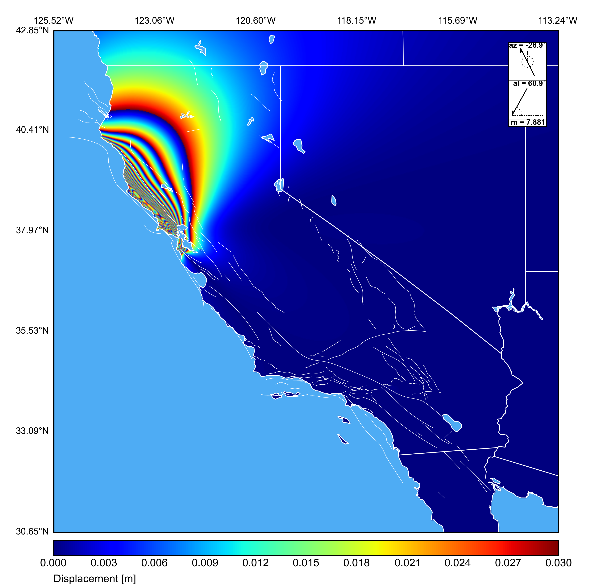
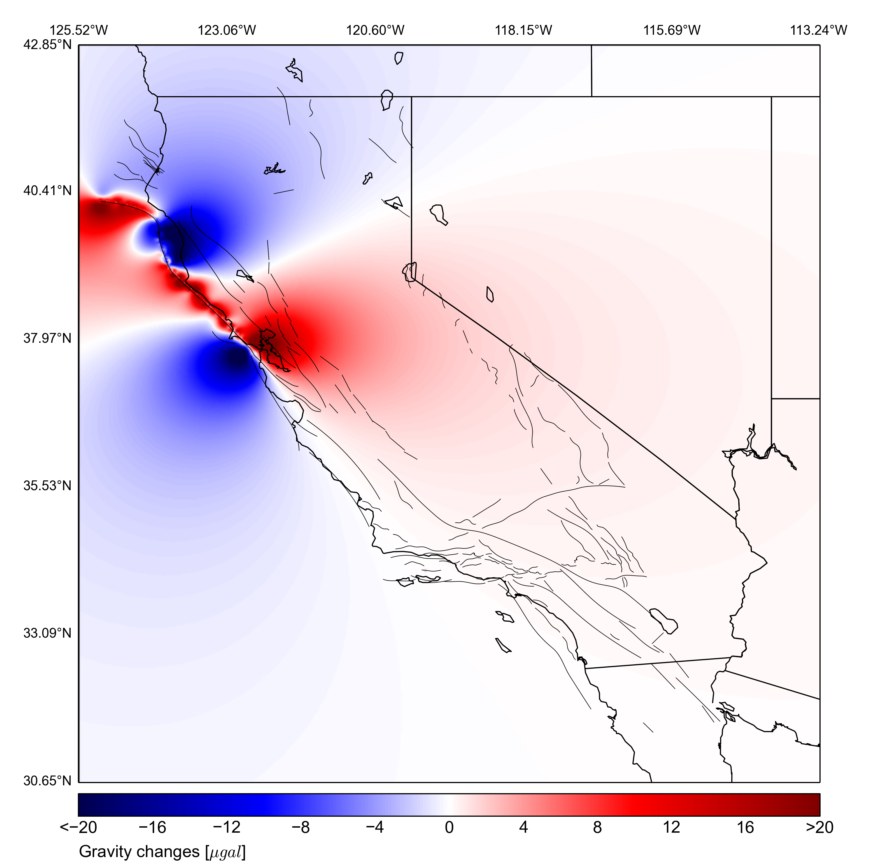
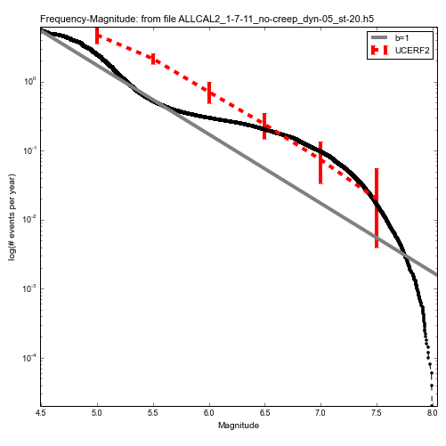
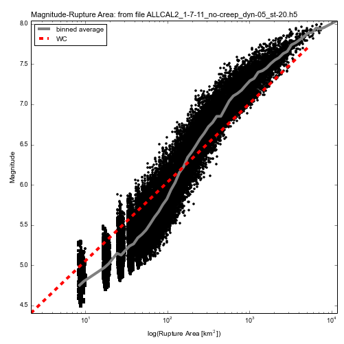

Kasey W. Schultz
kwschultz AT ucdavis DOT edu
Office: Physics 532
Advisor: Dr. John Rundle
Virtual Quake Simulator
Virtual Quake has become the standard fault system simulator code for California and it is the most widely used. It is now maintained by the NSF-supported Computational Infrastructure for Geodynamics ( CIG). In the first four months after being released on CIG, it was downloaded more than 170 times by users on all continents (except Antarctica). Virtual Quake will be one of the two earthquake simulators used to analyze the recently released UCERF3 fault model for California, the standard California fault system produced by the USGS. Furthermore, in 2012 Virtual California — as a member of the QuakeSim team — was co-winner of NASA’s Software of the Year award. Virtual Quake (VQ) is a boundary element code that models the earthquake fault system in California. VQ is designed to explore the statistics of seismicity in today's fault system by simulating stress interactions between faults. In a simulation, the faults slowly creep at the geologically observed rates and earthquakes are triggered by the stress on individual faults reaching the critical value, determined by known scaling relations. During the rupture (earthquake) faults slip and release accumulated stress.
Computing Earthquake Probabilities
The simulation output relevant to computing earthquake probabilities are the recurrance times, or the time between successive earthquakes on a given fault. We can take these recurrence times from the simulation output compute the cumulative probability distribution for an earthquake on the specified faults. From this distribution we can also compute the expected waiting times until the next earthquake, as a function of the time since the last large earthquake. The Virtual Quake computed earthquake probabilities and waiting times are given for Northern and Southern California at the links below.
Surface Displacements
InSAR interferogram showing the surface displacement pattern for a large earthquake simulated earthquake (similar magnitude, rupture length and average slip as the 1906 San Francisco earthquake) on the northern San Andreas Fault. Displacements are computed via Okada's half-space deformation functions. Count the number of cycles from blue -> red, multiply by 0.03m to get the displacement.
Gravity Changes
VQ computes gravity changes for the same simulated event by passing the fault geometry and the slips for each element as input into Okubo's gravity Green's functions. These statistical data sets of gravity changes and vertical displacements can help develop and test future satellite-based earthquake/tsunami early warning systems.
Fundamental Gravity Patterns
I have added to Virtual Quake the ability to compute co-seismic gravity changes. This was accomplished via a custom implementation of gravity Green's functions given in Okubo 1992. Shown below are the VQ-computed gravity changes for 5 meters of slip on a simple 10km by 10km fault for the 3 fundamental fault geometries. Each element is embedded in a homogeneous elastic half-space, the depth to the top of each fault element is 1km, and the color unit is microGal [10^-8 m/s^2]. The view is looking straight down onto the surface from above, and the thick black line is a projection of the fault plane onto the surface.
Strike-slip faulting, dip = 90 degrees.
Normal faulting, dip = 60 degrees
Thrust faulting, dip = 30 degrees.
Catalog of Gravity Changes
This video is a way of visualizing gravity changes for earthquakes over a 100 year interval of a Virtual Quake simulation. This is not a time dependent evolution of the gravity field, but is a "slideshow" of co-seismic gravity changes for all earthquakes in the time frame. Gravity fields are made to fade with time to smooth the animation. The majority of the events are strike-slip faults (plate motion is similar to rubbing two bricks together on their long edge) and have a characteristic butterfly pattern in the gravity signal. The inset plot on the lower left is the cumulative frequency-magnitude distribution.
Frequency vs. Magnitude
Earthquake frequency simulated by VC, averaged over 500,000 years of simulated time, plotted as function of magnitude, red error bars denote the observed earthquake rates in California, and the gray line is the Gutenberg-Richter law. Deficiency of simulated events below magnitude 6.0 is due to the finite size of each fault element in the simulation; smaller fault elements would yield more small events.
Magnitude vs. Rupture Area
Scaling relation between magnitude the rupture area (M vs logRA), red line is the published scaling relationship by Wells and Coppersmith 1994.
Current and Future Research Topics
- Computing earthquake probabilities, forecasting with VQ
- Subduction zone thrust fault modeling, field visualizations
- Producing a Python module for sim data analysis and visualizations shown above
- Gravity/Displacements/Potential time series correlations
- Southern San Andreas Fault, matching paleoseismic recurrence times